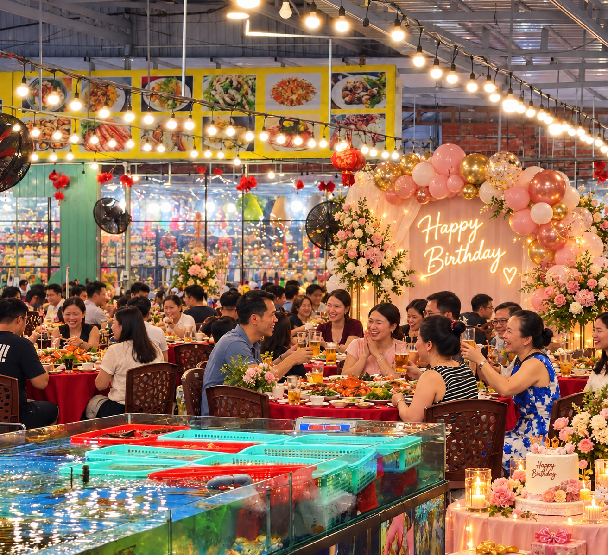
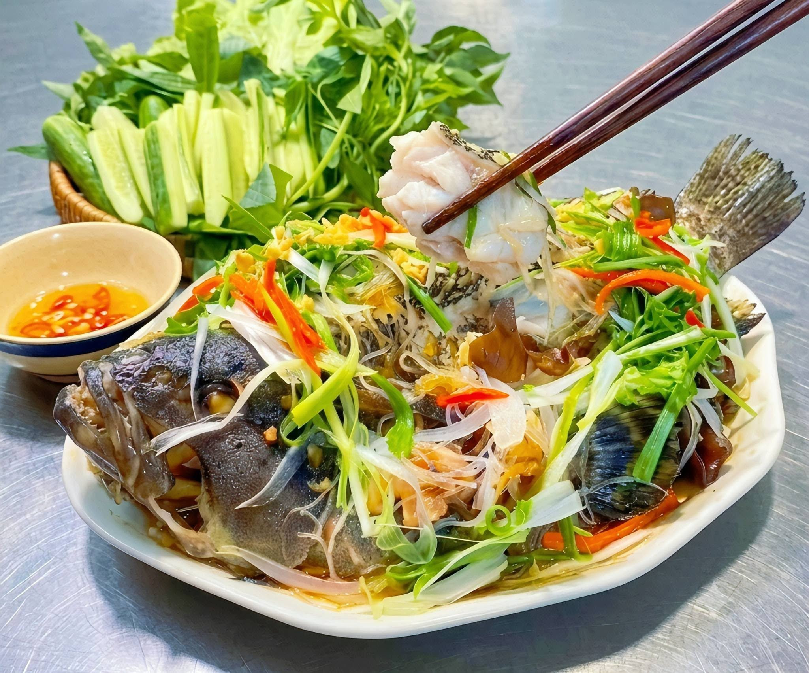
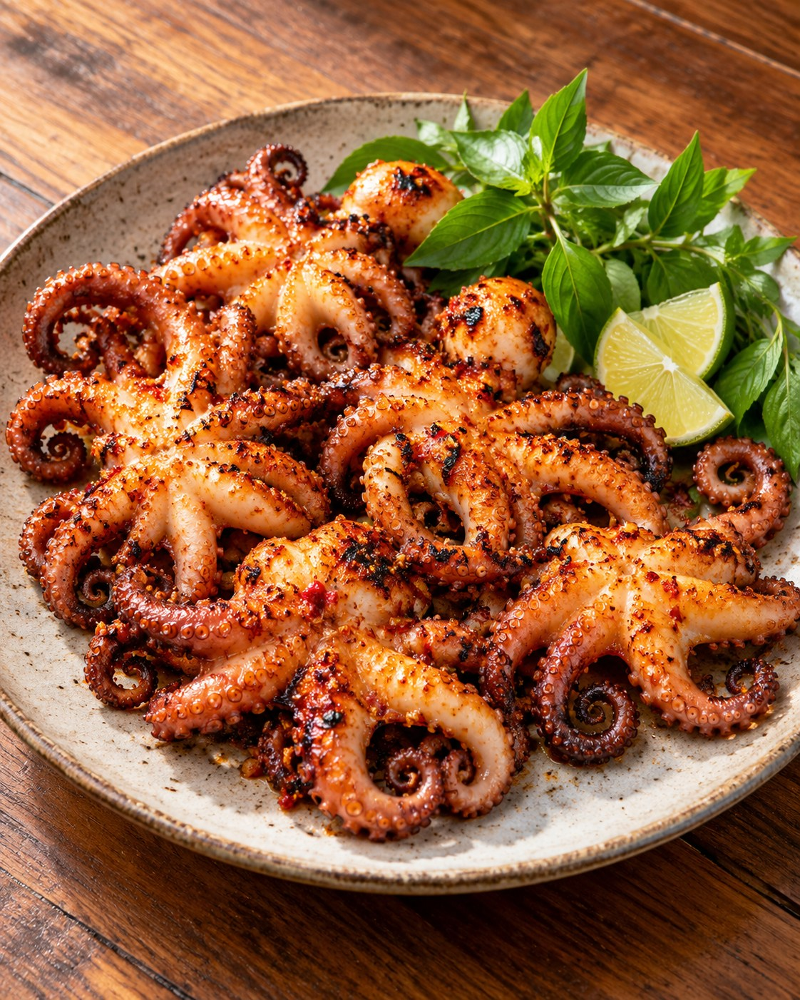
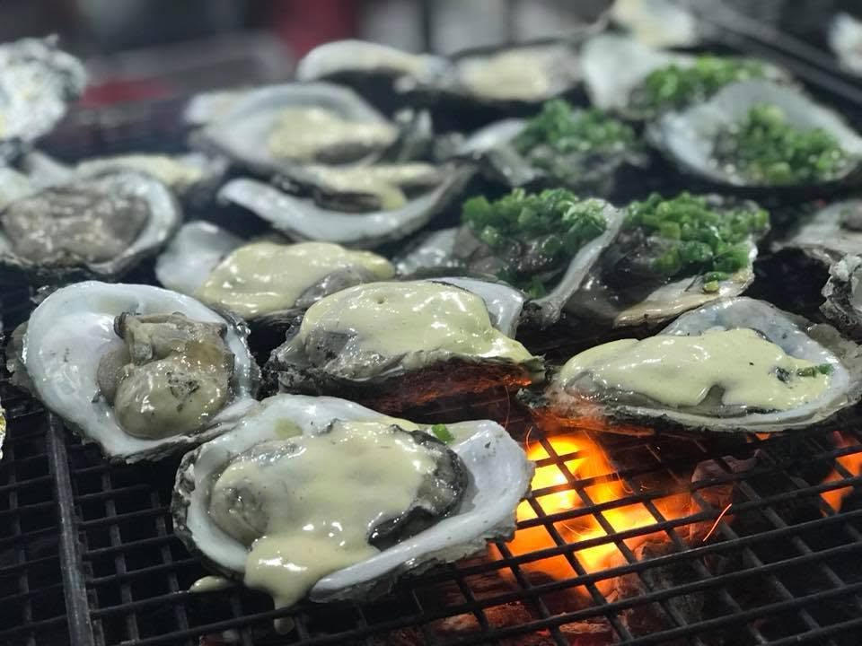
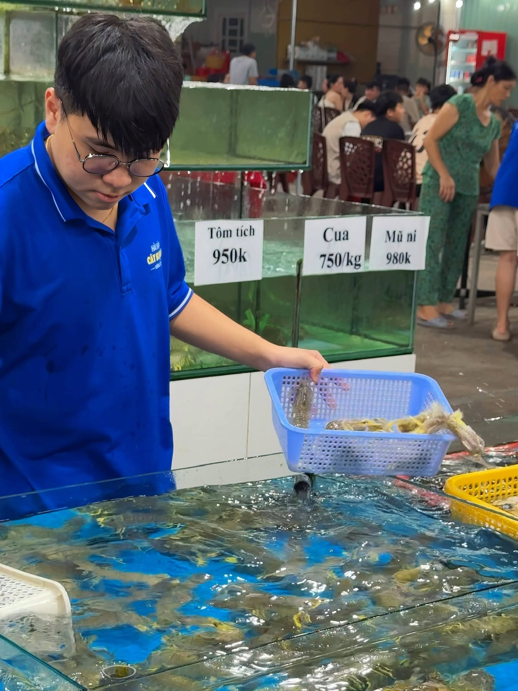
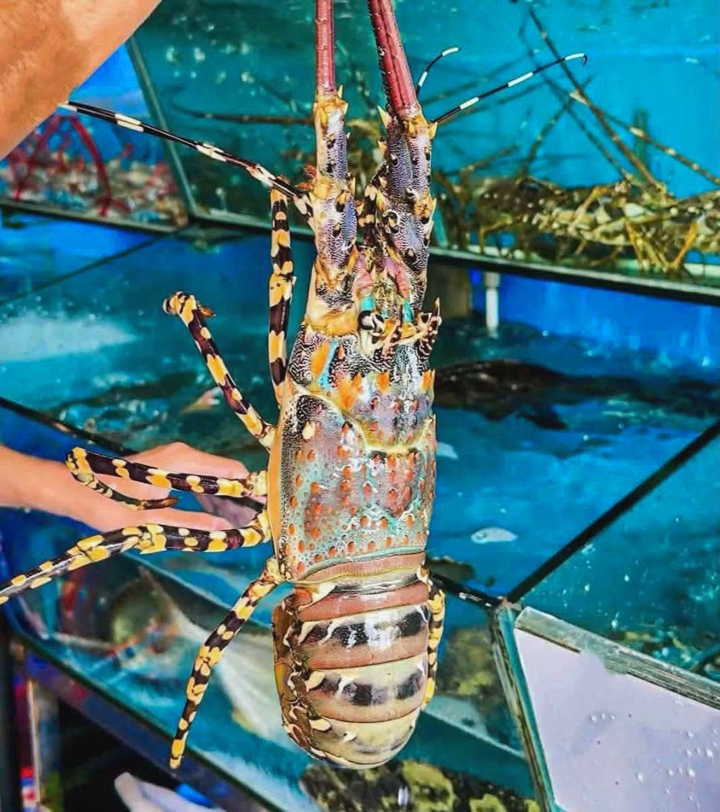
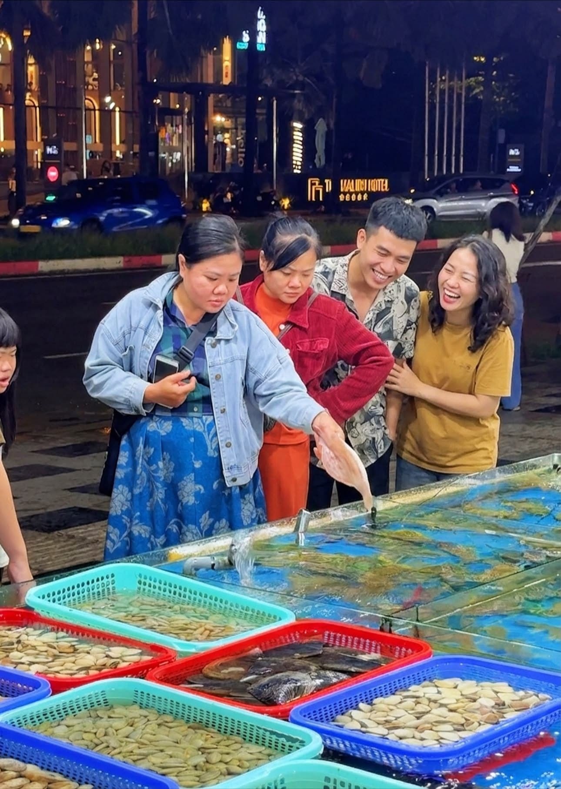

VŨNG TÀU · VIỆT NAM / HẢI SẢN TƯƠI SỐNG
Hải sản Vũng Tàu Cây Si Quán.
Thưởng thức lẩu cá đuối, hải sản tươi sống và các món nướng tại Cây Si Quán Vũng Tàu. Ghé quán ở số 4 Lê Hồng Phong Nối Dài, cùng gia đình và bạn bè quây quần bên những món ngon đậm vị biển.
HẢI SẢN TƯƠI
SỐNG✳CƠM · LẨU · NƯỚNG

01 / THE OCEAN EDITION↗

01 / CÂU CHUYỆN CÂY SI
Mộc mạc vị biển. Ấm áp tình thân.
Ở Cây Si Quán, hải sản Vũng Tàu được biến tấu thành những món ăn thân thuộc — từ hàu nướng mỡ hành, cá nướng muối ớt đến lẩu cá đuối măng chua nóng hổi.
Một bữa cơm gia đình, cuộc hẹn bạn bè hay buổi gặp mặt đông vui — chúng tôi luôn mong bạn có một nơi để thưởng thức hương vị biển theo cách thoải mái nhất.
Tìm hiểu thêm↗HƯƠNG VỊ BIỂN CẢ
Tinh túy từ đại dương.

Từ món hấp thanh ngọt đến nướng thơm lừng, mỗi cách chế biến là một cách cảm nhận biển cả.
TƯƠI SỐNG MỖI NGÀY02 / KHÁM PHÁ HƯƠNG VỊ
Biển cả trên từng trang thực đơn.
Từ món quen gần gũi đến hải sản cho những dịp đặc biệt. Chọn hương vị bạn yêu thích.
Khám phá toàn bộ thực đơn03 / CẢM HỨNG TỪ BIỂN
Món ngon gọi mời.
Mỗi bữa ăn có một câu chuyện riêng — bắt đầu bằng nguyên liệu tươi và một bàn ăn đầy ắp tiếng cười.







Một điểm hẹn cho những cuộc vui bên biển.
Xem thực đơn ↗✳
CAM KẾT NGUYÊN LIỆU
CHÚNG TÔI CHỈ MUA SẢN PHẨM TỪ NHÀ CUNG CẤP UY TÍN TẠI VŨNG TÀU, ĐẢM BẢO CHẤT LƯỢNG CAO NHẤT CHO TỪNG MÓN ĂN.
VŨNG TÀU—CÂY SI
HẢI SẢN TƯƠI SỐNG TẠI BỂ
Hải sản đang bơi.
Chọn tại bể, ngon trên
bàn.
Một trong những trải nghiệm thú vị tại Cây Si là được quan sát và tự tay lựa chọn hải sản tươi sống đang bơi tại bể, rồi yêu cầu chế biến theo khẩu vị.
Tìm hiểu thêm ↗


05 / NƠI MỌI NGƯỜI GẶP NHAU
Không chỉ là một bữa ăn.
Gia đình quây quần, bạn bè rôm rả, các buổi liên hoan và hẹn gặp — Cây Si là nơi dành cho những khoảnh khắc cùng nhau.
Khám phá không gian↗


06 / GHÉ CÂY SI
Cây Si cách tháp Tam Thắng 300m
Từ Tháp Tam Thắng, ghé Cây Si tại số 4 Lê Hồng Phong Nối Dài. Hai điểm hẹn gần nhau, cho một buổi dạo biển và thưởng thức hải sản.
HẸN NHAU Ở CÂY SI
Một bàn ăn, ngàn chuyện vui.
Bạn đang lên kế hoạch cho một bữa ăn bên gia đình, bạn bè hay khách đoàn? Gọi cho Cây Si để trao đổi và đặt bàn.
Giờ mở cửaHằng ngày10 giờ sáng – 1 giờ khuya
Điện thoại
Địa chỉSố 4 Lê Hồng Phong Nối
Dài,
Vũng Tàu, Việt Nam
Vũng Tàu, Việt Nam
Kết nối với chúng tôi